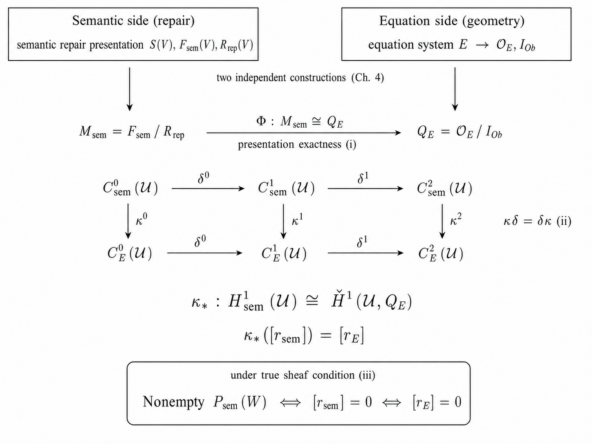
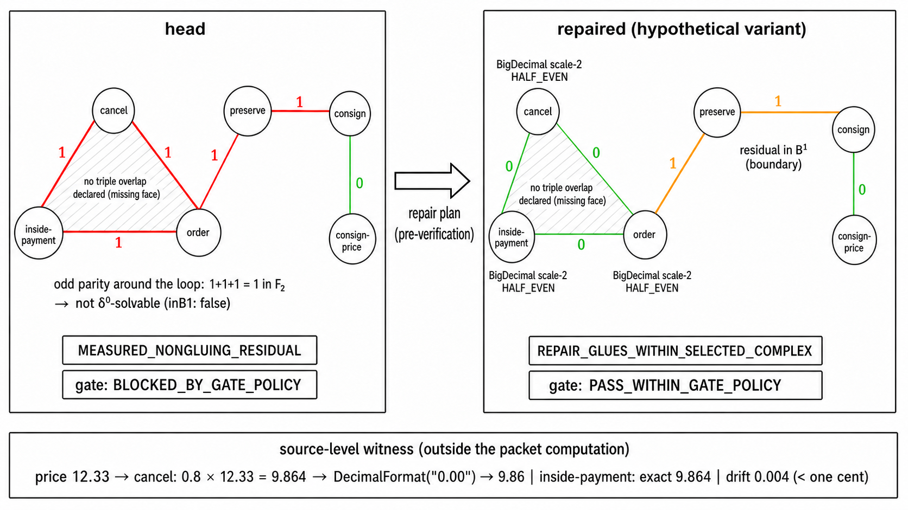

The SAGA comparison theorem chain, including coefficient/cochain isomorphisms and finite witnesses, is machine-checked in Lean with a Mathlib axiom audit.
Abstract
In a software architecture, each service can obey its own conventions and each handoff between adjacent services can hold, and yet a semantic inconsistency may remain that appears only on a full traversal of the system. This paper independently constructs two cohomologies measuring this gap between local and global correctness, and proves that they agree. The first construction speaks the language of repair: from the semantic repair options admitted in each local context and their equivalence relation, it generates the coefficient $M_{\mathrm{sem}}$. The second speaks the language of equations: it organizes the constraints of the architecture as a simultaneous equation system and generates the quotient coefficient $Q_E$ by its obstruction ideal. Over a selected finite cover $U$ in Algebraic Architecture Theory (AAT), which constructs software architecture as algebraic geometry, and under finitely many selection conditions matching the local data, the comparison map induces the isomorphism $H^1_{\mathrm{sem}}(U) \cong \check{H}^1(U, Q_E)$ together with a correspondence of residual classes. We call this the SAGA comparison theorem. The obstructions measured in the two languages are the same cohomology class, so semantic diagnosis and geometric computation translate into each other. Moreover, when the family of repair states satisfies the sheaf condition, a global repair exists if and only if the obstruction class vanishes on both sides. The paper presents this result in three layers: the mathematical proof; the Lean formalization status at release time; and a diagnosis in which the measurement tool ArchSig, on a real open-source microservice system, reproducibly walks the full circle from a measured nonzero obstruction to its disappearance after repair. The three layers refer to the same release identity, and each claim is connected to primary evidence.
Problem
In software architectures, each service and each pairwise handoff can be locally consistent while a semantic inconsistency remains that appears only on a full traversal. The goal is to measure this local-to-global gap and show two different formulations of the obstruction coincide.
Approach
Two Čech cohomologies are constructed independently over a finite AAT cover: one from semantic repair options (coefficient M_sem) and one from an architectural equation system's obstruction ideal (coefficient Q_E). A comparison map is shown to induce an isomorphism H^1_sem(U) ≅ Ȟ^1(U, Q_E) with residual-class correspondence. The theorem chain, its inputs, coefficient/cochain isomorphisms, sheaf descent, and finite witnesses are formalized as Lean structures, checked against the standard Mathlib axiom allowlist (propext, Classical.choice, Quot.sound). A Rust tool ArchSig computes the same residuals and obstruction classes on real code.

Figure 1: The structure of the SAGA comparison theorem (Theorem 5.1 ). The semantic side (upper left) and the equation side (upper right), constructed independently in Section 4 , pass through the coefficient isomorphism \Phi (i) and the cochain isomorphism \kappa commuting with the differentials (ii) to the H^{1} isomorphism \kappa_{*} and the residual class correspondence \kappa_{*}([r_{\mathrm{
Results
The comparison isomorphism and residual correspondence are proven and Lean-formalized, including finite counterexamples for failure of each condition. On the train-ticket microservice benchmark, ArchSig reproducibly measures a nonzero obstruction (the one-cent refund inconsistency) and its vanishing after repair.

Figure 2: The diagnosis staircase of the one-cent obstruction. In head (left), derived residuals stand on the 3 triangle edges and the 2 preserve-family edges, and the odd parity on the closed loop of the triangle is not solvable by \delta^{0} ( inB1: false ). No triple overlap is declared; the absence of the face is shown hatched. In the repaired variant (right), replacing the 3 charts of the tri